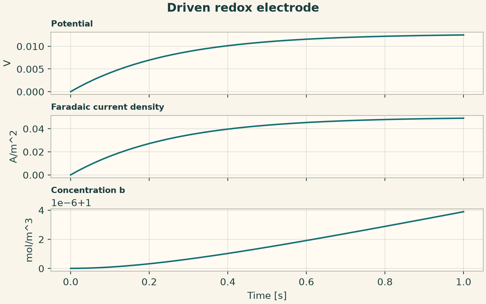
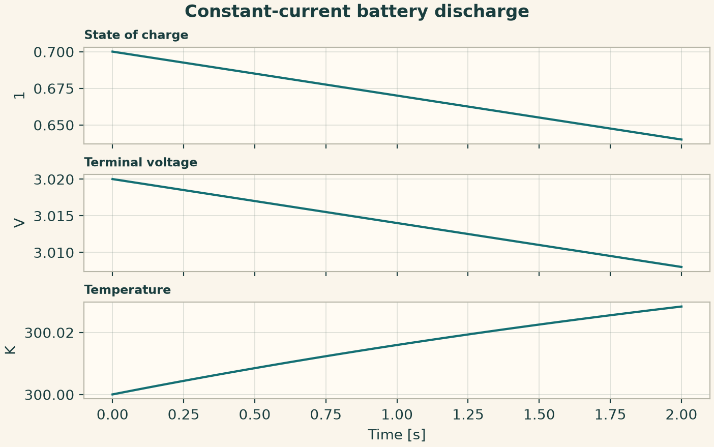
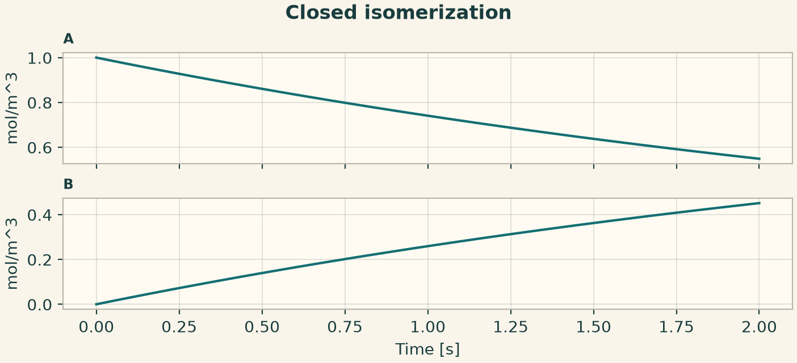

Docs › Worked physics and service recipes › Chemistry recipes
6.6 Chemistry recipes
6.6.1 Driven redox electrode
Use explicit stoichiometry, an equilibrium-potential closure, and a current density. Track the overpotential through the electrode potential and the transfer of material between species.
from onesim.physics.chemistry import LumpedElectrode, ElectrochemicalReaction
domain = LumpedDomain()
model = LumpedElectrode(
domain=domain.system,
reactions=(
ElectrochemicalReaction("redox", {"A": -1, "B": 1}, 0.1, lambda c, T: 0.0),
),
area=0.01,
volume=0.001,
double_layer_capacitance=1,
applied_current_density=0.05,
)
t, data = history_case(
domain,
model,
dict(potential=0.0, concentration_A=1.0, concentration_B=1.0),
("potential", "faradaic_current_density", "concentration_B"),
end=1,
dt=0.005,
)
assert data["concentration_B"][-1] > data["concentration_B"][0]
fig = history_plot("Driven redox electrode", model, t, data)
plt.show()

6.6.2 Constant-current battery discharge
Use a state-dependent open-circuit voltage and constant internal resistance. A positive current removes charge and generates ohmic heat.
from onesim.physics.chemistry import LumpedBattery, BatteryChemistry
domain = LumpedDomain()
model = LumpedBattery(
domain=domain.system,
chemistry=BatteryChemistry("cell", lambda s, T: 3 + 0.2 * s, lambda s, T: 0.4),
charge_capacity=10,
current=0.3,
thermal_capacity=2,
heat_transfer=0.5,
ambient_temperature=300,
)
t, data = history_case(
domain,
model,
dict(state_of_charge=0.7, temperature=300.0),
("state_of_charge", "terminal_voltage", "temperature"),
end=2,
dt=0.01,
)
np.testing.assert_allclose(data["state_of_charge"], 0.7 - 0.03 * t, atol=1e-9)
fig = history_plot("Constant-current battery discharge", model, t, data)
plt.show()

6.6.3 Closed isomerization reaction
Declare atom-balanced species and one reaction. The constant rate coefficient multiplies the reactant number density. Number density moves between the two species while their sum stays fixed.
from onesim.physics.chemistry import (
ReactionIR,
ReactionKinetics,
ReactionNetworkIR,
SpeciesIR,
)
domain = LumpedDomain()
species = tuple(
SpeciesIR(n, 0, 1.66054e-27, composition=(("H", 1),)) for n in ("A", "B")
)
reaction = ReactionIR(
"conversion", (("A", 1),), (("B", 1),), {"kind": "constant", "value": 0.3}
)
network = ReactionNetworkIR("isomers", "1", species, (reaction,), strict_balance=True)
model = ReactionKinetics(domain=domain.system, network=network)
a, b = model.concentration("A").name, model.concentration("B").name
t, data = history_case(domain, model, {a: 1.0, b: 0.0}, (a, b), end=2, dt=0.01)
np.testing.assert_allclose(data[a], np.exp(-0.3 * t), atol=1e-9)
np.testing.assert_allclose(data[a] + data[b], 1, atol=1e-12)
fig = history_plot("Closed isomerization", model, t, data)
plt.show()
